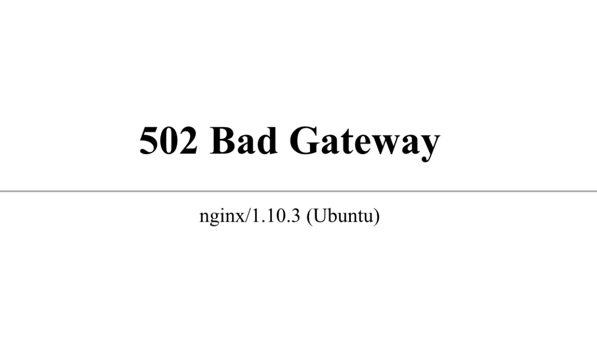
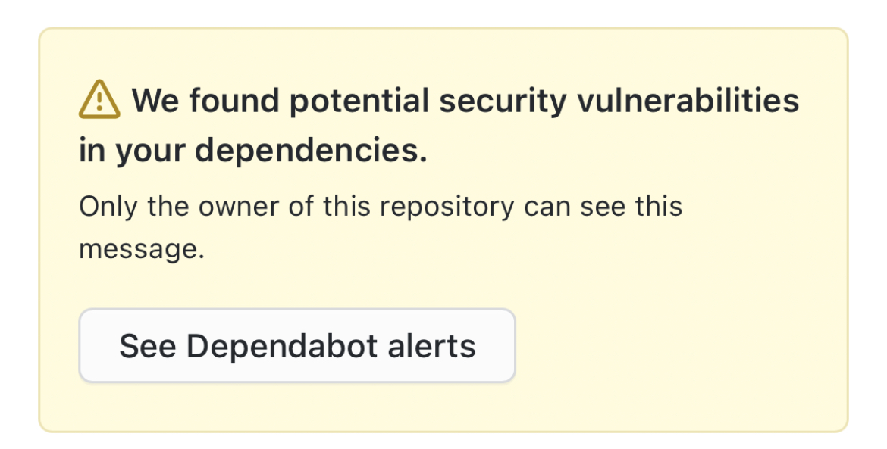

Ope, Hey There!
This isn’t where you thought you were going huh? Swore you clicked on
a link for a project? Or at least a GitHub repo?
I apologize!
I had to bring you here for a quick pit stop because if we had went to
the real link you would have received this
. Or this
. Heck i may
eventually just .
Instead, we detoured to a special place of mine. It’s called
my procrastination station. Here we
find a base layer of imposter syndrome, mixed with a large chunk of
anxiety and sprinkled with a little bit of you guessed it,
procrastination!
Anyways, as it is with most people, I hope to slowly update my
projects and create new content so this site can be canned. But let’s
be honest, I will always keep her in my back pocket. Until then, you
can find me on my email. Or crying on my couch waiting to meet new
friends and smile at a stranger.


AHHH SCROLL BACK UP. DON'T LOOK HERE.